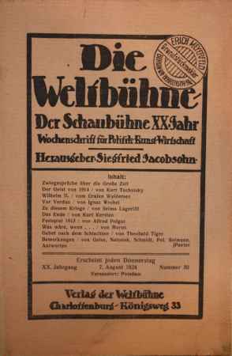

Reading data¶
This chapter introduces some basic techniques in reading text corpora using the de facto standard tools in Python.
First explorations with text corpora
Using tagging to annotate texts
Working with tagged datasets to train machine learning models
Basics of Natural Language Processing (NLP)
Introduction to Spacy
Why Kurt Tucholsky ?¶
Spanning an interesting time (1890–1935)
Historical changes: WWI, rise of Nazis, Kaiser vs. Weimar
Character changes: Romantic towards political
Geographical changes: Paris, Berlin
Goal¶
Capture whole work of Tucholsky
With its changes in tone, used language
Correlate e.g. keyword development with places, general history
Hopefully: Observe trends of Tucholsky’s mind
